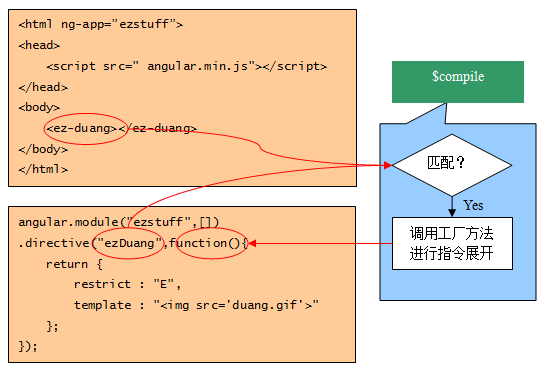

指令/directive 基本思想：指令是DOM元素（例如属性、元素、CSS类等）上的标记符， 用来告诉AngularJS的HTML编译器 （$compile服务）将特定的行为绑定到DOM元素，或者改变DOM元素。 指令使用示例：指令可以放置在元素名、属性、CSS类名称及备注中。 例如：
本质：指令的实现本质上就是一个类工厂，它返回一个指令定义对象，编译器根据这个指令定义对象进行操作。 示例图： 
一幅动画